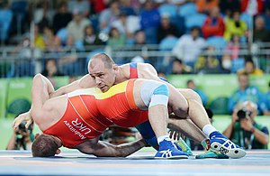

Wrestling is a martial art and combat sport that involves grappling with an opponent and striving to obtain a position of advantage through different throws or techniques, within a given ruleset. Wrestling involves different grappling-type techniques such as clinch fighting, throws and takedowns, joint locks, pins, and other grappling holds. Many different wrestling techniques have been incorporated into martial arts, combat sports, and military systems. Wrestling is genuine competition; professional wrestling is athletic theatre.
Wrestling comes in different competitive forms such as freestyle, Greco-Roman, judo, sambo, folkstyle, catch, shoot, luta livre, submission, sumo, pehlwani, shuai jiao, and others. [1] Wrestling first appeared in the ancient Olympic Games as an event during the 18th Olympiad in 708 BC. [2] There are a wide range of styles with varying rules, with both traditional historic and modern styles. The term "wrestling" is referenced in late Old English as wræstlunge (glossing palestram).[3]
Wrestling represents one of the oldest forms of combat sport. The origins of wrestling go back around 15,000 years through cave drawings in France. Babylonian and Egyptian reliefs show wrestlers using various holds known in the present-day sport. Literary references to wrestling occur as early as the Old Testament and the ancient Indian Vedas[specify]. In the Book of Genesis, the Patriarch Jacob is said to have wrestled with God or an angel.[4] The Iliad, in which Homer recounts the Trojan War of the 13th or 12th century BC, also contains mentions of wrestling.[5] Indian epics Ramayana and Mahabharata contain references to martial arts including wrestling.
In Ancient Greece wrestling occupied a prominent place in legend, literature, and philosophy. Wrestling competition, brutal in many aspects, served as the focal sport of the ancient Olympic Games. Ancient Romans borrowed heavily from Greek wrestling, but eliminated much of its brutality through implementing different rules. Wrestling is referenced throughout both Ancient Greek and Roman literature. Many philosophers and leaders practiced wrestling and/or referenced the sport frequently in their works, most notably Plato, Socrates, Aristotle, Xenophon, Epictetus, Seneca, Plutarch, and Marcus Aurelius. Dicaearchus wrote that Plato wrestled at the Isthmian games. [6] Many of Plato's dialogues are set in wrestling schools. Ancient Greek lyric poet Pindar wrote victory odes, grouped into four books named after the Olympian, Pythian, Isthmian, and Nemean Games – Panhellenic festivals held respectively at Olympia, Delphi, Corinth, and Nemea. These odes were composed to honor the men and youths who had enjoyed victories in wrestling, boxing, pankration and other athletic contests. During the Middle Ages from the fifth to fifteenth century, wrestling remained popular and enjoyed the patronage of many royal families, including those of England, France, and Japan. Early British settlers in America brought a strong wrestling tradition with them. The settlers also found wrestling to be popular among Native Americans.[7] Amateur wrestling flourished throughout the early years of the North American colonies and would later serve as a popular activity at country fairs, holiday celebrations, and in military exercises. The first organized national wrestling tournament in the United States took place in New York City in 1888. Wrestling has also been an event at every modern Olympic Games since the 1904 games in St. Louis, Missouri; Greco-Roman wrestling was contested at the first modern Olympics in 1896, but not at the 1900 games. The international governing body for the sport, United World Wrestling (UWW), was established in 1912 in Antwerp, Belgium as the International Federation of Associated Wrestling Styles (FILA). The first annual NCAA Wrestling Championships were held in 1928 in Ames, Iowa. USA Wrestling, located in Colorado Springs, Colorado, was established as the national governing body of U.S. amateur wrestling in 1983.